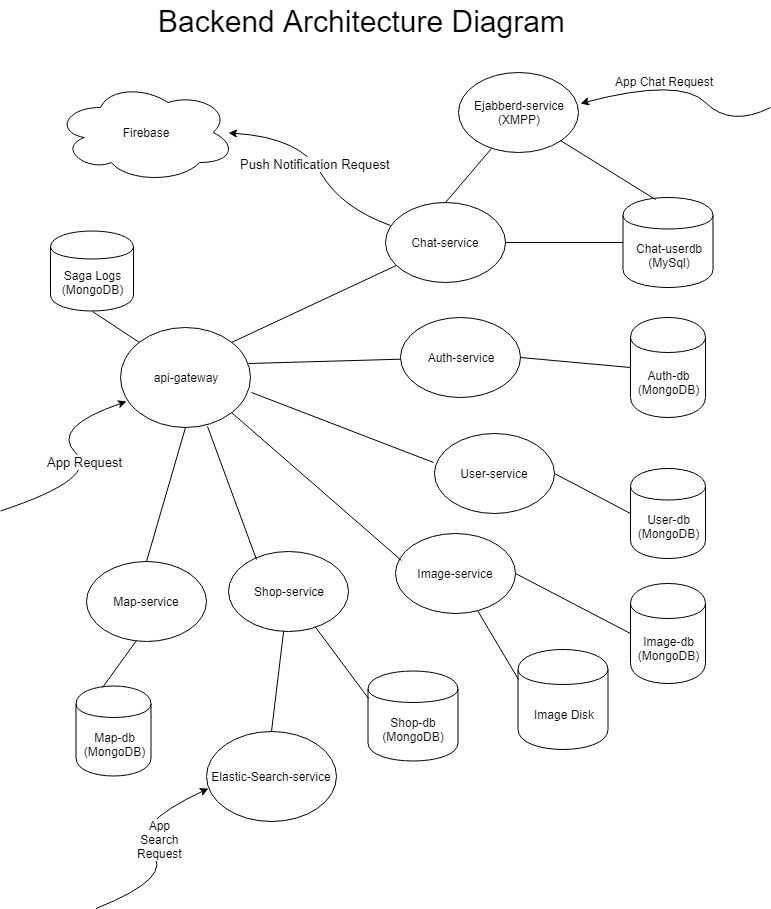

My friend and I collaborated on building an Android application through which users can login, establish a shop(s) and place a marker on a map through which promote their shop(s). Users can also interact with other users using in-app instant messaging, search for items using a search bar, or browse products using "infinite" product scrolling. This project was built from scratch referencing various online resources and documentation. More details are available at Google Play.
During my junior year, I enrolled in classes that covered a wide range of topics including software engineering, networking, databases, data structures and algorithms. These classes were mostly theory-based, but I was also interested in working with practice-based applications. As such, I decided to build something that could potentially be developed into a marketable product. Teaming up with a friend who had similar interests, we proceeded to develop a product that would help local small businesses and individuals promote their shops and interact with customers, all within a single application.
As our first step, we researched how to build servers, what frameworks to use, and ways to set up the development environment. We started with small sub-projects and built our way up to bigger projects, solving the challenges we came upon one at a time. There were times when it took hours, and even days to solve technical problems, but the joy that came from solving a problem pushed us on towards the next challenge. I worked on the project part-time through the school year, and devoted full-time attention to it during the summer and winter breaks.
Overall, I had fun working on this project and learned a lot about technologies and technical concepts that were not taught to me in school. The most fulfilling moments came throughout the process when we conceptualized, explained and eventually assembled and implemented working features. As a result of this project, I discovered my particular passion for back-end development, and it has solidified my plan to pursue a career in back-end software development. This project is no longer under development.
We tried to technically understand similar crowdsourcing products such as Kijiji, Craigslist, Yelp, Letgo, Varagesale, and wanted to create something different and unique.
The backend was built using Node.js Docker containers following the microservice design pattern, that was inspired by a YouTube video, "Mastering Chaos - A Netflix Guide to Microservices".
The chat-service has access to the MySQL database that is connected to Ejabberd-service (XMPP), which allows custom http requests that the Ejabberd framework does not support. For example, unread messages and dialog lists cannot be synced among multiple device using only XMPP. However, by adding such a service, it makes these features possible. Also, this service handles push notification message delivery to users when they are disconnected from the XMPP server.
A XMPP framework Ejabberd was used to add an instant messaging functionality.
Enabled features are:
Stores and handles requests for user data such as profile image uri, background image uri, shop ownership, name.
Stores and handles requests for image files and its permissions. Image names are stored as MD5 hashes.
Stores and handles requests for shop data such as its products, cover images.
Handles app search requests made from the app search bar. Search requests are proxied from the shop-service.
Stores and handles requests for shop locations on the map. Locations are stored and queried using mongoDB’s geospatial queries.
{kind=link}
{kind=link}
{kind=link}
{kind=link}
{kind=link}
{kind=link}
{kind=link}